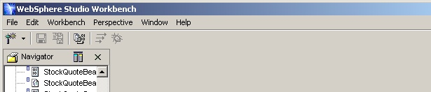
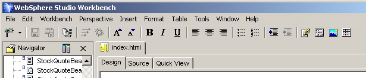
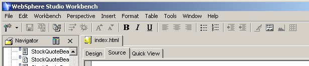

| Eclipse Corner Article |
SummaryBy Dejan Glozic
Eclipse platform desktop offers various ways a plugin can contribute to menus and tool bars. The most natural way for views is to contribute directly (if you own the view, that is). However, editors are somewhat special - their contributors are registered alongside editors and contribution from editor instances is not allowed. This article explains why the difference and how editor contributors prevent renegade runtime footprint and improve user experience. We will also take a look at handling editor contributors in multi-page editors.
A standalone application developer has a relatively easy task since he owns all of the action vectors (menu bars, tool bars, pop-up menus etc.). A plugin developer must view its task as a contribution to the whole. Its contribution will 'rub elbows' with those from other plugins, and seamless integration becomes very important.
Desktop integration of actions is relatively easy for view developers. Eclipse views are fairly encapsulated desktop parts. They have a local tool bar and a pull-down menu. Because of this encapsulation, adding a view to the desktop is a relatively easy affair.
Content editor is a completely different animal. Editors normally require a large number of actions that are applicable in their context. Embedding these actions into the desktop part is not possible in all but a very few simple cases. Instead, editors add their actions to the shared desktop areas: the main menu and tool bars. This creates a few problems. There can be potentially many editors opened at once. They cannot all add their menus and tool bars into the shared area - it would be a disaster. It would not be right either, because only one editor can be active at a time. A context switching mechanism is needed to make sure that only actions of the active editor are visible at any given point in time.
Context switching ensures that visibility of the editor and its actions in the desktop's shared areas are in sync. This requirement cannot be left to editor developers - it is too important. Instead, editors are asked to create a contribution and this contribution is used to add and remove actions on active editor switching.
Usage of mementos is transparent to editor developers. Eclipse desktop employs
mementos to implement context switching, and ISVs are only required to do the
contribution part. The only thing for developers to remember is that some kind
of recording takes place, and that it is done on editor creation. Editors will
not be able to modify their contribution afterwards - it will simply be switched
in and out, as shown in Figure 1.
|  |
| (a) |
|  |
| (b) |
| Figure 1: Eclipse desktop menu and tool bar with no editors (a) and with HTML editor opened (b). Note how there are more menus and buttons in picture (b). These additions are coming from the contribution associated with the editor. |
For example: if we open 10 HTML files with a Web Tooling editor, and it has 40 actions to contribute, we will have 400 action instances in memory. Only 10% of these instances will be used at any point in time because only one of these editors can be active. The remaining 90% will be switched out.
There is also a problem of menu and tool bar updates. In a naive implementation, every editor switch would mean context switching for these shared areas: actions of the deactivating editor will be removed, while those of the activating editor will be added. But switching between editors of the same type means that we are removing and adding instances of the same actions. Nothing will change in the desktop except the unavoidable pause and flashing.
interface IEditorActionBarContributor extends IActionBarContributor {
public void editorChanged(IEditorPart editor);
}
This contributor extends action bar contributor interface and adds a method to inform you about the editor change. This method is called only when editors of your editor type are switched, so you can safely cast it into your editor class. The implementors of this interface would use its required methods (contributeToMenu, contributeToToolBar etc.) to add actions, submenus etc. in the usual way. The key difference here is that these actions must be designed without any specific editor instance in mind. They have to work on the currently active instance, which means that they need to recalculate their enable state every time there is editor change.
When a file is opened for editing, and the editor instance is the first of that editor type to be opened, the contributor will be created as well. The contributor will create a memento and keep it. When editors are switched, it will use the memento to switch actions in or out. When another editor instance of the same type is opened, no new actions will be created. The running contributor will call editorChanged to allow actions to update. Contributor and its actions will be removed and disposed only when the last instance of this editor type is closed.
The key difference here is that context switching will occur only when two editors of the different type are switched. On switching editors of the same type, only editorChanged will be called in the contributor. This means that editor changes will be smooth, with no flashes and pauses.
First, create a page listener interface:
interface IEditorPageListener {In your multi-page editor class, add two methods to register the listener:
public void pageChanged(WorkbookPage page);
}
public void addEditorPageListener(IEditorPageListener listener);When page within the editor changes, notify the listeners by calling pageChanged with the newly active page.
public void removeEditorPageListener(IEditorPageListener listener);
In the implementation of editor contributor, connect on each editor switch:
public MultiPageContributor implements IEditorActionBarContributor,
IEditorPageListener {
MyMultiPageEditor currentEditor=null;
public void editorChanged(IEditorPart part) {
MyMyltiPageEditor editor = (MyMultiPageEditor)part;
if (currentEditor!=null) currentEditor.removeEditorPageListener(this);
currentEditor = editor;
currentEditor.addEditorPageListener(this);
updateActions();
}
public void pageChanged(WorkbookPage page) {
updateActions(page);
}
}
The behavior of this class is straightforward: when editor becomes active,
the contributor disconnects from the old editor and connects to the new one.
While the current editor is active, page changes within it will cause the contributor
to update the action state. The two overloaded methods for updating actions
not shown here simply update the state of the actions according to the state
of the current editor and the currently selected page in the editor.
| (a) |
|  |
| (b) |
| Figure 2: Eclipse desktop menu and tool bar for the Source (a) and Design view (b) of the HTML editor. The same actions are present for both pages, but some of them are disabled for the Source view. |